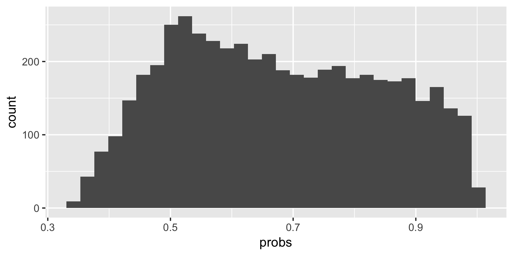
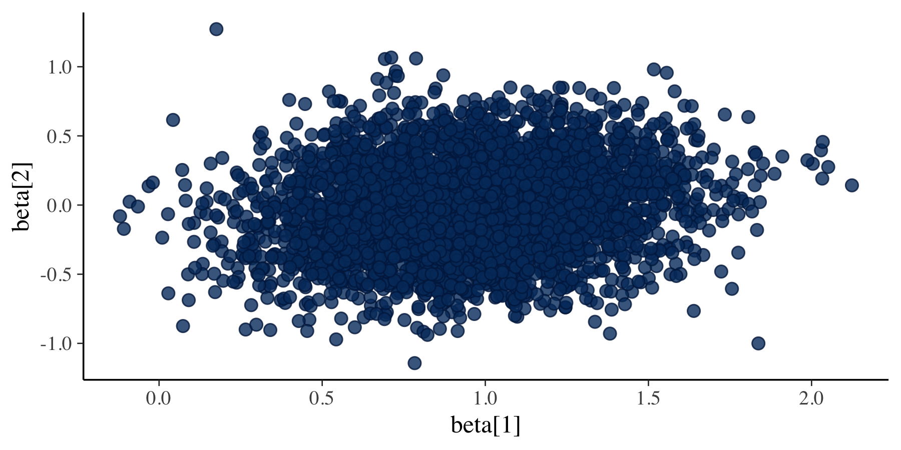
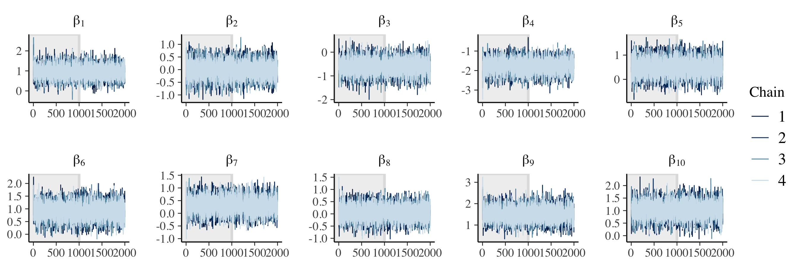
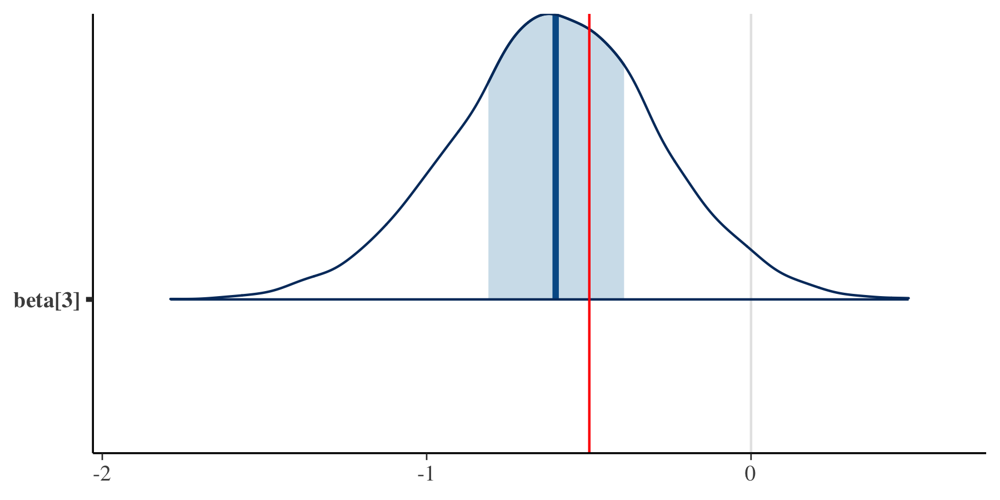
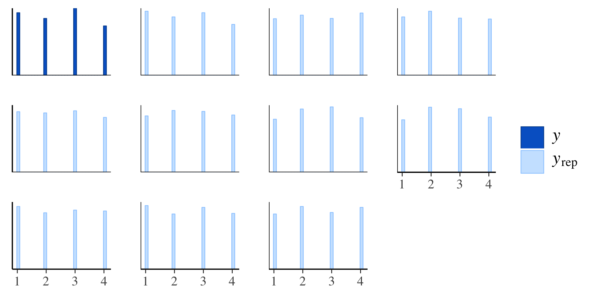
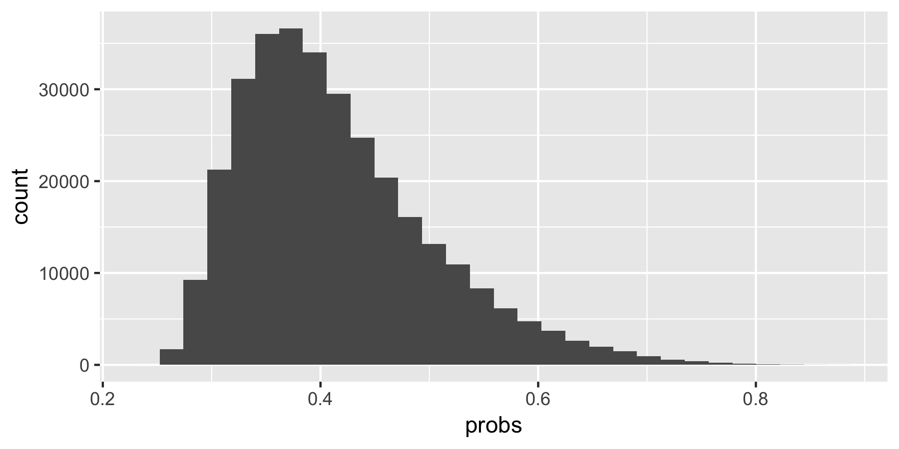

This tidy Bayesian workflow details the process of statistical modeling using a tidy approach to Bayesian inference along with modern tools and diagnostics. In particular, we will employ the tidyverse for data wrangling and visualization and Stan for modeling.
The workflow is composed of three sections: model building, model calibration, and model validation. The workflow material draws heavily from Michael Betancourt’s case studies and training on using Stan at Drexel University in Fall 2018.
You’ll first need to install Stan, including a compiler, and rstan. This can take some time, so plan accordingly.
A model starts conceptually: What is the data generating process? In other words, where do the data come from? This conceptual model often lives within a literature of model building, is motivated by theory, and at its most basic may simply be a consideration of how to relax assumptions in an existing model. Document this description, as it likely serves as the beginning of an introduction to the project. Above all, the model needs to be consistent with our domain expertise.
For a running example, let’s consider consumer choice. Drawing from economic theory, we can conceptualize the data generating process as follows: Consumers get “utility” from different features of a product such that they simply choose the product that gives them the most utility overall. We can add a lot of complications to this model, but conceptually, this is probably the simplest expression.
As part of this conceptual description of the model, we should consider the ideal dataset. We encode the information about the observations using the data block in Stan. We should also consider what summary statistics and visualizations would be helpful to evaluate the model.
For consumer choice, while we could get scanner data, if we can run an experiment like a conjoint, we can cleanly know what products the consumer was considering as well as the features of the chosen product and each of the competing products. As a further simplification, we can consider all binary attribute levels (i.e., either included or not included).
We can encode the observations using the data block in our Stan file.
// Observed choices and the experimental design.
data {
int N; // Number of observations.
int P; // Number of product alternatives.
int L; // Number of (estimable) attribute levels.
int Y[N]; // Vector of observed choices.
matrix[P, L] X[N]; // Experimental design for each observation.
}The summary statistic that is most informative for a model of choice is the implied choice probability. A priori, we likely expect that the choice probabilities across product alternatives are more or less equal – that there isn’t a dominating alternative.
Next, we translate our simplified expression of the conceptual model into a mathematical specification. The full model includes both the likelihood \(p(y|\theta)\) (i.e., the data generating process) and the prior \(p(\theta)\). We start simple both because we would prefer a simpler model if it performs just as well as a more complicated model and because we can build the model by adding complexity as needed. This is encoded by adding the parameters and model blocks in Stan. The specified model can be compared with competing models to build evidence for and against motivating theory. In this way we can view science as a sequence of models that serve as evidence in continuously revising and updating theory.
The translation of the simplest expression of our conceptual choice model into a mathethematical specification yields a multinomial logit model. The multinomial logit is a regression where the response variable \(y\) can take on more than one discrete value (e.g., the chosen alternative). It is a generalization of the logit model. We are also simplifying things by assuming an aggregate (i.e., non-hierarchical) model, meaning every consumer gets the same utility \(\beta\) or from every attribute level. It’s a stupid assumption, but simplifying assumptions usually are. Here’s the Stan code:
// Observed choices and the experimental design.
data {
int N; // Number of observations.
int P; // Number of product alternatives.
int L; // Number of (estimable) attribute levels.
int Y[N]; // Vector of observed choices.
matrix[P, L] X[N]; // Experimental design for each observations.
}
// Parameters for the multinomial logit.
parameters {
vector[L] beta; // Vector of aggregate beta coefficients.
}
// Multinomial logit model.
model {
// Standard normal prior for beta.
beta ~ normal(0, 1);
// Multinomial logit.
for (n in 1:N) {
Y[n] ~ categorical_logit(X[n] * beta);
}
}Now that we’ve built a simple model, we need to ensure that it will perform as expected (i.e., that it is consistent with our domain expertise). Specifically, we need to be sure that the prior and likelihood are interacting as expected, something nearly impossible to determine by just looking at the model specification. To do this, we need to perform prior predictive checks, prior because this is before we have data and predictive because we’re considering what the model as specified would predict.
The resulting prior predictive distribution should be plausible based on your domain expertise and provides a clean way to communicate and evaluate the consequences of the assumptions you’ve made in building your model, including specifying the prior. We conduct the prior predictive check by adding the generated quantities block in Stan in place of the parameters and model blocks, since we’re generating or simulating data.
Note that we could also simulate data just using R. However, simulating data using Stan does a few things for us.
Here we translate the parameters and model blocks into a generated quantities block to simulate data according to the proposed prior and likelihood. Note how statements about distributions (e.g., beta ~ normal(0, 1)) get turned into statements that generate parameter values and data from those same distributions (e.g., beta = normal_rng(0, 1)). Also note that besides the number of observations, etc. the data arguments have also moved to be initialized in the generated quantities block since they too are being simulated.
// Number of observations, choices, etc. to simulate.
data {
int N; // Number of observations.
int P; // Number of product alternatives.
int L; // Number of (estimable) attribute levels.
}
// Simulate data according to the multinomial logit model.
generated quantities {
int Y[N]; // Vector of observed choices.
matrix[P, L] X[N]; // Experimental design for each observations.
vector[L] beta; // Vector of aggregate beta coefficients.
// Draw parameter values from the prior.
for (l in 1:L) {
beta[l] = normal_rng(0, 1);
}
// Generate an experimental design and draw data from the likelihood.
for (n in 1:N) {
for (p in 1:P) {
for (l in 1:L) {
X[n][p, l] = binomial_rng(1, 0.5);
}
}
Y[n] = categorical_logit_rng(X[n] * beta);
}
}We then call the generative model from R.
# Load libraries.
library(tidyverse)
library(rstan)
# Specify the data values for simulation in a list.
sim_values <- list(
N = 100, # Number of observations.
P = 3, # Number of product alternatives.
L = 10 # Number of (estimable) attribute levels.
)
# Specify the number of draws (i.e., simulated datasets).
R <- 50
# Simulate data.
sim_data <- stan(
file = here::here("Code", "mnl_simulate.stan"),
data = sim_values,
iter = R,
warmup = 0,
chains = 1,
refresh = R,
seed = 42,
algorithm = "Fixed_param"
)We can now extract the simulated data to perform the prior predictive check and produce the prior predictive distribution.
Here, we are computing the implied choice probabilities using the experimental design X and the parameters beta. Note that in this instance summaring the data Y is not informative; we are summarizing the data X and parameters beta combined to produce the underlying, implied choice probabilities that produce Y.
# Extract simulated data and parameters.
sim_x <- extract(sim_data)$X
sim_b <- extract(sim_data)$beta
# Compute the implied choice probabilities.
probs <- NULL
for (r in 1:R) {
probs_temp <- NULL
for (n in 1:sim_values$N) {
exp_xb <- exp(sim_x[r,n,,] %*% sim_b[r,])
max_prob <- max(exp_xb / sum(exp_xb))
probs <- c(probs, max_prob)
}
probs <- cbind(probs, probs_temp)
}
# Make sure there aren't dominating alternatives.
tibble(probs) %>%
ggplot(aes(x = probs)) +
geom_histogram()
The prior predictive distribution doesn’t have a spike at probability of 1, so our prior of beta ~ normal(0, 1) combined with the multinomial logit likelihood does not produce dominating alternatives. This part of the workflow typically requires some iteration in terms of model building, since the ways in which the prior and likelihood can combine aren’t obvious. When there are issues, we can modify the prior and/or the likelihood until we see a joint distribution in terms of the prior predictive distribution that fits our domain expertise.
Once we have completed iterating through our prior predictive check and have decided on a fully specified generative model that accurately reflects our domain expertise, we are ready to calibrate (i.e., estimate or fit) the model. An underlying question at this point in our workflow is whether our estimation algorithm is sufficient to accurately fit the model. The more complex our model becomes, the more this will be of concern.
Before calibrating the model with actual data where we can easily confound the model’s performance on the given data with the performance of the algorithm, we first confirm that the model and estimation routine are performing as expected by calibrating the model using simulated data. With simulated data, we have specified the underlying truth and can focus entirely on evaluating the estimation procedure and demonstrating parameter recovery.
Just as we used the prior predictive check as a diagnostic to help set priors and specify the likelihood, so too will our evaluation of calibrating the model with simulated data help inform how we parameterize the model as well as what estimation algorithms we employ. A model can be expressed in a number of different, mathematically equivalent ways. However, a given estimation routine may work best using certain parameterizations. Thus, when diagnostics suggest it, we may need to reparameterize our model. Additionally, while we would like to use Hamiltonian Monte Carlo (HMC) in Stan for estimation, in no small part because it has powerful diagnostics, it is possible we may need to depart and use a different estimation routine for a given model.
To summarize, we need to:
This step of calibrating the model with simulated data and then evaluating can be referred to collectively as a simulation experiment.
We already have a number of simulated datasets from our prior predictive check. Let’s start with using just one of them for calibration. We also have the model specified, which we can call from R.
# Extract the data from the first simulated dataset.
Y <- extract(sim_data)$Y[1,]
X <- extract(sim_data)$X[1,,,]
# Specify the data for calibration in a list.
data <- list(
N = length(Y), # Number of observations.
P = nrow(X[1,,]), # Number of product alternatives.
L = ncol(X[1,,]), # Number of (estimable) attribute levels.
Y = Y, # Vector of observed choices.
X = X # Experimental design for each observations.
)
# Calibrate the model.
fit <- stan(
file = here::here("Code", "mnl_estimate.stan"),
data = data,
seed = 42
)Note that we are using the defaults for the number of iterations (i.e., 2,000, half of which are warmup iterations) and the number of chains (i.e., 4). Once the model has run, which may take some time depending on the model and the data, we can evaluate it, starting with Stan’s built-in diagnostics.
Hamiltonian Monte Carlo Diagnostics
There are a number of powerful HMC-specific diagnostics that allow us to evaluate how well the algorithm is performing for our model. One of the assumptions for Markov chain Monte Carlo (MCMC) algorithms generally and HMC in particular is that the posterior we are exploring is fairly smooth. If it isn’t smooth, our model will have divergent trajectories when exploring the posterior. When clustered, these divergences not only indicate an issue with model fit, where they concentrate also suggest ways forward (e.g., they are often an indication of the need to reparameterize the model). These issues will be present for any MCMC, but they are easier to diagnose using HMC.
Let’s start with a numeric summary.
# Check divergences.
library(bayesplot)
source(here::here("Code", "stan_utility.R"))
check_div(fit)[1] “0 of 4000 iterations ended with a divergence (0%)”
Of the 1,000 iterations across 4 chains, there aren’t any divergences. We can also visualize this.
as.matrix(fit) %>%
mcmc_scatter(
pars = c("beta[1]", "beta[2]"),
np = nuts_params(fit),
np_style = scatter_style_np(div_color = "green", div_alpha = 0.5)
)
)
If there were divergences for the two parameters in this bivariate plot, they would be highlighted in green. Without divergences, we have evidence that our estimation routine is converging and that the posterior geometry is smooth. Note that occassional divergences aren’t a problem – it’s a pattern or structure to the divergences that indicates issues with the model or computational tool.
General Markov Chain Monte Carlo Diagnostics
More generally, we can check the effective sample size across iterations, along with the Rhat statistic.
# Check the effective sample size.
check_n_eff(fit)[1] “n_eff / iter looks reasonable for all parameters”
# Check the Rhat statistic.
check_rhat(fit)[1] “Rhat looks reasonable for all parameters”
Another general diagnostic is looking at trace plots. This is a visualization that allows us to quickly see whether the model is converging and that each chain is converging to the same value.
# Check trace plots.
fit %>%
extract(
inc_warmup = TRUE,
permuted = FALSE
) %>%
mcmc_trace(
pars = c(
"beta[1]", "beta[2]", "beta[3]", "beta[4]",
"beta[5]", "beta[6]", "beta[7]", "beta[8]"
),
n_warmup = 1000,
facet_args = list(nrow = 2, labeller = label_parsed)
)
These chains are clearly converging. However, trace plots can’t help us diagnose problems with the the geometry of the posterior or suggest where and how to reparameterize. Thus, they’re a fine addition but not a replacement for evaluating model estimation with divergences, assuming we’re using HMC.
If we have clustered divergences, we may need to reparameterize our model. Even then, we may discover that we can’t use Stan and HMC at all. As we move outside of HMC, we can still look at trace plots and calculate the effective sample size and Rhat statistic, but we no longer have access to using divergences as a diagnostic.
However, as a general diagnostic (i.e., with or without HMC), we can use simulation-based calibration. If we simulate from the joint distribution (i.e., the prior and likelihood), construct a posterior, and then average over the posterior, we should get back the prior.
Let’s consider this step-by-step:
Ranks may be the best way to test: \(r = \#\{\tilde{\theta} < \tilde{\theta}^\prime_n\}\). This should give us a uniform distribution. It should be obvious when there are problems.
Since we are working with simulated data, a final step we can do is demonstrate parameter recovery. Since certain values have been specified for the parameters in order to simulate data, we can make sure that the model has converged on these same values. However, parameter recovery alone, much like trace plots, don’t ensure proper behavior of the estimation procedure.
“Parameter recovery is an additional calibration that you might require of a model as there are no general guarantees of posterior behavior in Bayesian inference. That said, non- or weak- identifiability can manifest in especially poor calibrations.” -Michael Betancourt
Here we extract the true parameter values for the first dataset and plot the true value along with the marginal posterior for the first parameter.
# Recover parameter values.
beta <- extract(sim_data)$beta[1,]
as.array(fit) %>%
mcmc_areas(pars = c("beta[3]")) +
vline_at(beta[3], color = "red")
Note that the true value of the parameter (in red) is within the default 90% confidence band of the marginal posterior. This is an example of the parameter value being recovered.
What about the following warning? Running with default number of iterations results in:
Warning message:
Tail Effective Samples Size (ESS) is too low, indicating posterior variances and tail quantiles may be unreliable.
Running the chains for more iterations may help. See
http://mc-stan.org/misc/warnings.html#tail-ess Once we feel confident that the model is a correct reflection of the underlying conceptual model and that the model is performing as expected on simulated data, we can estimate the model using real data.
Note that unlike the simulated data, which is already structured correctly, we will need to make sure that the choices are a vector and the design matrix is an array.
Finally, we’ll want to use some of the same diagnostics as in the simulation experiment to make sure nothing strange has been introduced.
If our model is a good fit, we should be able to generate data from it that looks a lot like the data we observed. To do this, we perform posterior predictive checks, posterior because at this point we have used data to inform our model and predictive because we’re considering what the model, so informed, would predict.
The draws from this posterior predictive distribution provide a final check on the assumptions of the model and how it interacts with actual data. Is there some feature of the data, and thus the data generating process, that we have misunderstood? Is our prior behaving in unexpected ways? Once again, we can return and iterate through the workflow based on what we learn here.
We should use the same summaries we used for the prior predictive check. In general, we are looking for model misfit, where the model is too simple or otherwise doesn’t fit the data well, and model overfit, where the model adheres too closely to this specific dataset. To summarize:
There are a number of ways to generate data from the posterior predictive distribution. Similar to how we generated data for the prior predictive check, we can use the generated quantities block again, this time after the parameters and models blocks. Thus, as the model is being estimated, we are taking draws from the posterior predictive distribution.
// Generate draws from the posterior predictive distribution.
generated quantities {
int yrep[N]; // Vector of predictions.
// Generate a prediction for each observation.
for (n in 1:N) {
yrep[n] = categorical_logit_rng(X[n] * beta);
}
}We could specify a separate number of predictions for each post-warmup iteration and chain by including a new variable in the data block and referencing it here rather than N. We can then extract these draws from the model output and run a number of different posterior predictive checks.
# Extract parameters and predictions.
beta <- extract(fit)$beta
yrep <- extract(fit)$yrep
# Evaluate the choices directly.
ppc_hist(Y, yrep[1:10,])
The typical posterior predictive check on \(y\) and \(yrep\) themselves aren’t particluarly enlightening. As we saw with the prior predictive check, we need to consider something more primitive, such as the implied choice probabilities that produce yrep.
# Compute the implied choice probabilities for the final 1/10 of draws.
probs <- NULL
for (r in (dim(beta)[1] - dim(beta)[1] * 1/10):dim(beta)[1]) {
probs_temp <- NULL
for (n in 1:length(Y)) {
exp_xb <- exp(X[n,,] %*% beta[r,])
max_prob <- max(exp_xb / sum(exp_xb))
probs <- c(probs, max_prob)
}
probs <- cbind(probs, probs_temp)
}
# Make sure there aren't dominating alternatives.
tibble(probs) %>%
ggplot(aes(x = probs)) +
geom_histogram()
While there are other, more informative posterior predictive checks we might consider, this gives us a sense that the model is working as expected.
At the beginning of the workflow, we considered that the specified model might ultimately be compared with competing models as a way of building evidence for and against motivating theory as part of a sequence of models that serve to continuously revise and update scientific theory. While the argument might be made that robust posterior predictive checks could be used in place of such model comparison, a single value to compare models is a helpful currency in our workflow.
There are a variety of different in-sample and out-of-sample fit statistics we could use. The top of the list for us should be WAIC, LOO, and (specific to our running example) hit rates.
Beyond fit statistics, we need to investigate the resulting posterior distribution and consider how it informs the motivating decision. This is an element of model comparison as well, where we can consider how each of the model differs in their informing decision-making.
Marc is an assistant professor of marketing at the BYU Marriott School of Business. He graduated with an MSc from The London School of Economics and Political Science in 2009 and a PhD from The Ohio State University in 2016. His research interests include Bayesian inference, predictive modeling, consumer preference heterogeneity, and unstructured data. Marc teaches marketing analytics. You can find him on Twitter and GitHub.